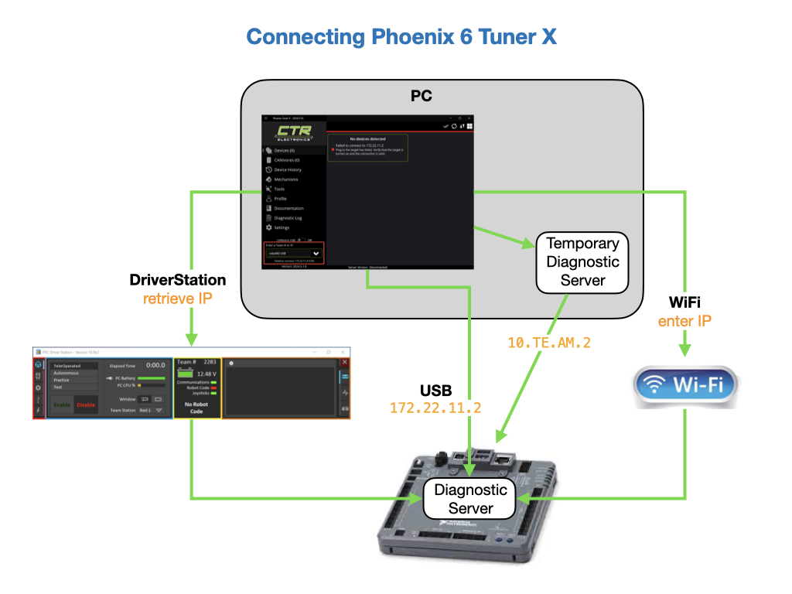
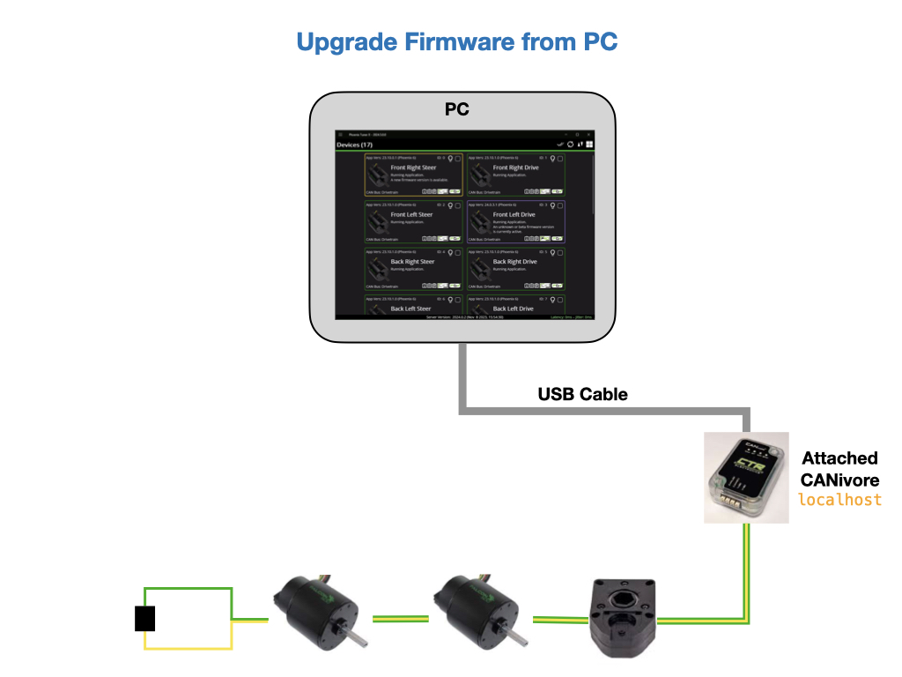

Installing Phoenix API Libraries
To install the Phoenix API libraries copy the link found on Phoenix Releases page. You’ll need to click on the Online tab to find the link. Click on the WPI pallet and type Manage Vendor Libraries then click on the menu option that appears. Click Install new libraries (online) and a textbox should appear. Paste the link into the textbox.
Migrating to Phoenix 6
To migrate a project to Phoenix6 API follow these steps:
Remove the older phoenix libraries. Go to vendordeps folder and delete the phoenix.json file.
Install CTRE Phoenix 6 libraries in VSCode. See above.
Remove any red-underlined imports in your code.
Remove the WPI_ from all of the class definitions. Use the mouse over to import new classes. Note that the second c in the CANcoder class is lowercase.
Update your code to apply the new syntax for configuring Phoenix hardware. See Configuration in the Phoenix 6 documentation.
Update your code to apply hardware control requests. See the Control Requests documentation.
Another resource is the Phoenix 6 Examples example code on GitHub. Also see Phoenix 6 Migration in the Phoenix documentation.
In order to select data values (referred to as Signal Values) from the Phoenix hardware you need to import these classes:
import com.ctre.phoenix6.BaseStatusSignal;
import com.ctre.phoenix6.StatusSignal;
Installing the Phoenix Tuner X
Phoenix Tuner is the companion application allowing you to configure, analyze, update and control device. See Phoenix 6 Tuner X for installing the tuner.
Connecting the Phoenix Tuner X
There are multiple ways to connect the tuner to the RoboRio. If you have a USB cable connected it defaults to 172.22.11.2 which is the roboRIO IP when connected via USB. You can also connect via the DriverStation as long as it’s connected to the RoboRio. If the RoboRio is newly imaged and there is no robot program running you’ll need to bring up a Temporary Diagnostic Server, which is done from the Tuner.
See the Phoenix Tuner X Devices page for information on upgrading devices. The Tuner will automatically download the latest firmware when it’s started. See Firmware Upgrade.
If you have a CANivore you can upgrade Phoenix device firmware directly from a PC.
References
CTRE - Create a Project